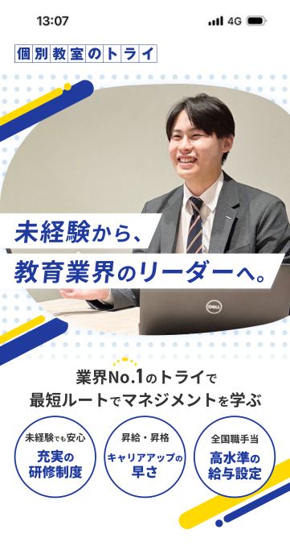
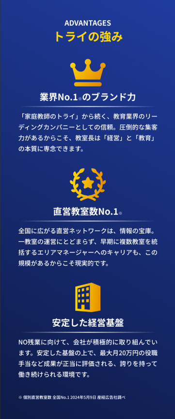
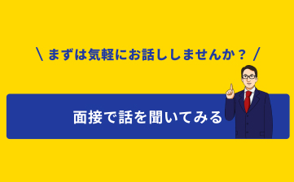
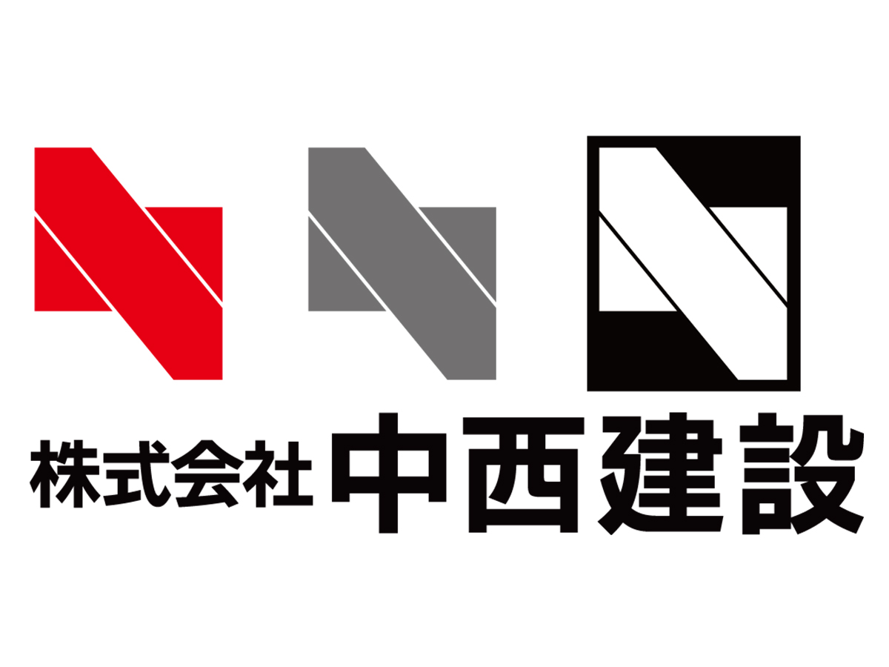
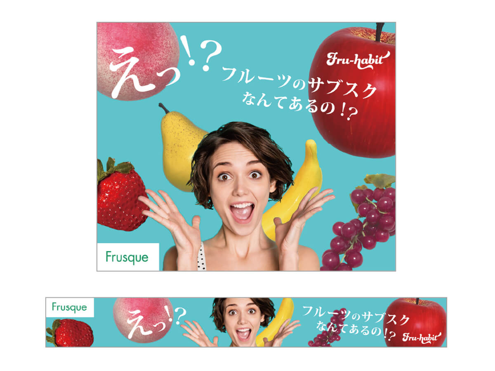
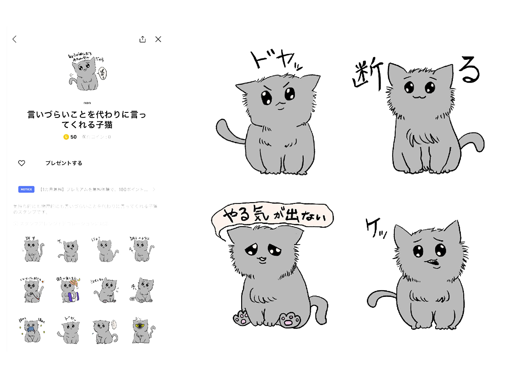

個別教室のトライ 塾講師応募LP

URL
https://ih-cloud.click/try-group/287779915423359799482814305783520922058
作業期間
2026/2/2～2026/2/5
作業範囲
- デザイン制作（20h）
制作ツール
- Photoshop
- Figma
コンセプト
「個別教室のトライ」としての強いブランドアイデンティティ（青・黄）を軸に、求職者が「ここで働きたい」と安心して思えるよう、誠実なトーンで統一。ブランドへの信頼感を踏襲しつつ、教育現場の温かみが伝わるデザインを目指しました。
制作概要
- 「個別教室のトライ」における塾講師採用を目的としたランディングページのデザインカンプを制作しました。社内の営業担当者やディレクターの意図を汲み取り、ブランドの信頼性を保ちつつ、求職者が「自分もここで働いてみたい」とポジティブな印象を抱くビジュアル設計を行いました。
ターゲット
45歳以下の塾講師未経験者。大卒以上。
工夫した点
- 1.先方要望である「誠実感・信頼感」をベースにしつつ、ファーストビューはあえて明るめのトーンに設定。求職者が最初に目にした際、塾講師という仕事にポジティブな印象を持ち、自然とページを読み進めたくなるような引きを意識しました。
- 2.「フリー素材感」を排除し、職場のリアルな雰囲気を伝えるため、実際の社員様の写真を優先的に配置しました。写真が不足する箇所については、PIXTA等の素材から、社員様の写真とトーンが近いものを厳選して補完することで、ページ全体に違和感のない「実存する教室の空気感」を演出しました。
- 3.「青（誠実・知性）」と「黄色（明るさ・活気）」というトライの象徴的なカラーを、コントラストに配慮しながら配置。信頼感を損なわない程度の彩度調整を行い、教育機関としての品位を保ったデザインに仕上げました。
デザインのポイント
- ファーストビュー
- 先方より、ファーストビューは明るめが希望だったので、トライの紺色と黄色を使用し、明るくポップな印象を持ってもらえるように作成しました。また、人物写真と重なる部分の可読性を確保するため、白背景のボックスを配置。さらに、全体の斜めのラインと角度を合わせることで、静止画の中に「勢い」や「成長感」を感じさせる工夫を施しました。
- トライの強み
- FVの明るい白背景とは対照的に、深い紺色のグラデーションを背景に採用しました。「業界No.1」という圧倒的な実績に説得力を持たせるため、誠実さと高級感を演出するダークネイビーを使用しました。情報の「軽さ」を抑え、教育業界のリーディングカンパニーとしての威厳と、経営基盤の安定感を視覚的に表現しています。
- CTA
- ユーザーに広く認知されているキャラクターを配置することで、求職者の心理的ハードルを下げる工夫をしました。「まずは気軽に」というコピーに合わせ、可愛らしく親しみやすいビジュアルに仕上げています。



Works
コーポレートサイト兼オンラインショップ・月見醸造

2024年10月
企画/情報設計/コンセプト/デザイン/コーディング/レスポンシブ/企業ロゴ作成/ラベル作成/写真加工/sass・jQueryでのアニメーション
コーポレートサイト・猫カフェPATTY

2024年8月
企画/情報設計/コンセプト/デザイン/コーディング/レスポンシブ/企業ロゴ作成/CSS・jQueryでのアニメーション
ロゴ制作・中西建設株式会社

2024年8月
コンセプト／デザイン
バナー制作・フルーツサブスクバナー

2024年7月
コンセプト／デザイン／写真撮影・加工／コピーライティング
趣味・イラスト

構成/デザイン